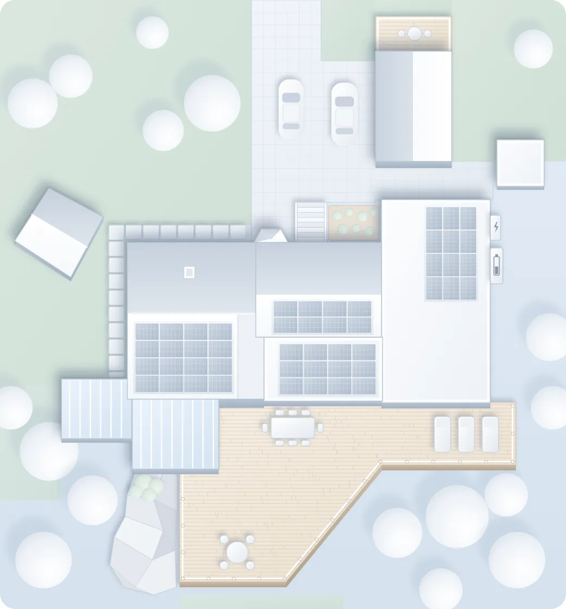

Förhandsvisning med demodata. Elnät och förbrukning uppe till vänster, solen mitt på taket, batteriet vid husbatteriet och en ruta vid bilarna när en bil laddar (läget Natt). Tjockleken följer effekten och prickarna rör sig åt det håll strömmen går.